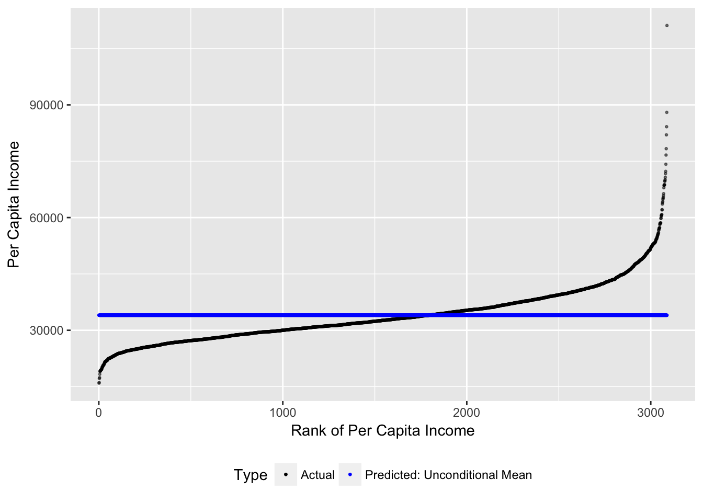
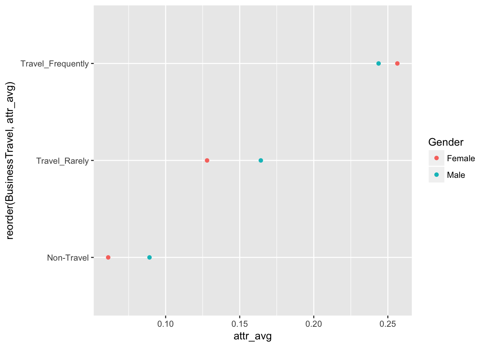
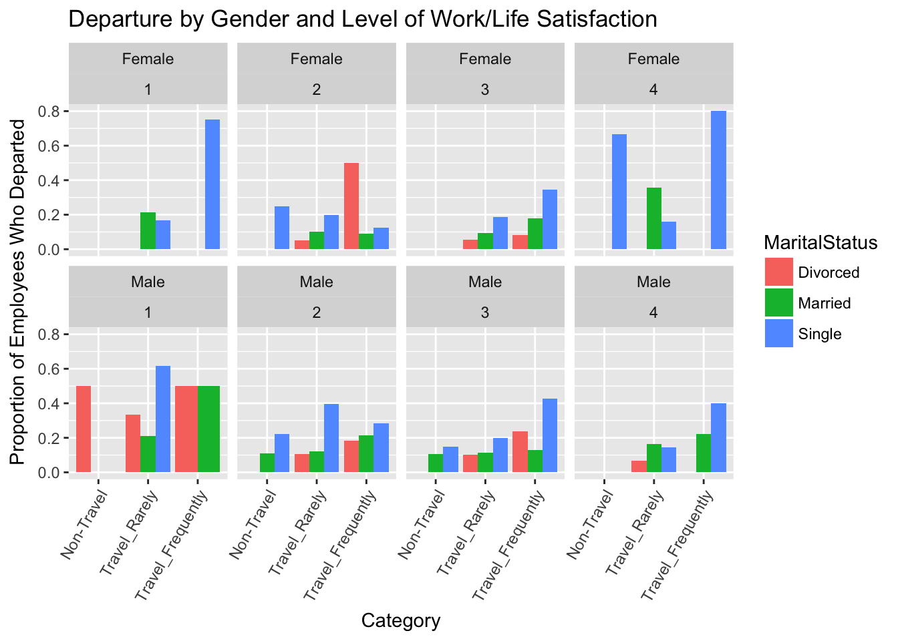

3 Presenting Data 1: Plotting Conditional Means
The idea when plotting conditional means is to show how the outcome, or variable of interest, varies as a function of predictors.
Today we’ll be working with a dataset from IBM which provide a standard HR dataset, which we can use to predict attrition. Attrition in this case is defined as an employee leaving without being fired or retiring. Companies generally attempt to avoid attrition, as it’s very expensive to search for and hire a replacement– better in general to keep the employees you have, provided they are doing their jobs. This means that it’s important to predict who might leave in a given year. This information can be used in a targeted way in order to focus resources on the employees most likely to leave.
3.1 Setup for plotting conditional means
We start with a standard set of setup commands. Today we’ll be working with dplyr, ggplot plus readr and forcats.
Next we load in the data, using the readr package. Note that this data is saved as comma separated or csv. This is an easy file format to recognize. When we use the readr package, it gives us some output that says how it interprets the data– is it a string variable, numeric (float), integer and so on.
3.2 Loading Data
at<-read_csv("https://community.watsonanalytics.com/wp-content/uploads/2015/03/WA_Fn-UseC_-HR-Employee-Attrition.csv")## Parsed with column specification:
## cols(
## .default = col_integer(),
## Attrition = col_character(),
## BusinessTravel = col_character(),
## Department = col_character(),
## EducationField = col_character(),
## Gender = col_character(),
## JobRole = col_character(),
## MaritalStatus = col_character(),
## Over18 = col_character(),
## OverTime = col_character()
## )## See spec(...) for full column specifications.## Save for later
save(at,file="at.Rdata")
## load("at.Rdata")Today, our primary outcome of interest will be attrition. This is a binary variable that is currently encoded as text– “Yes” or “No.” We need to encode it as a binary variable with 1 meaning yes and 0 meaning no. After recoding, we need to make sure that the new variable looks correct.
## Crate a new variable named attrit and define it as 0
at$attrit<-0
at$attrit[at$Attrition=="Yes"]<-1
table(at$Attrition)##
## No Yes
## 1233 237table(at$attrit)##
## 0 1
## 1233 237table(at$attrit,at$Attrition)##
## No Yes
## 0 1233 0
## 1 0 237Our first prediction will use business travel as a predictor for attrition. There are three categories here– non travel, travel infrequently, and frequent travel. We’ll calculate levels of attrtion at teach level and then take a look at the data.
at_sum<-at%>%
group_by(BusinessTravel)%>%
summarize(attr_avg=mean(attrit))
at_sum## # A tibble: 3 × 2
## BusinessTravel attr_avg
## <chr> <dbl>
## 1 Non-Travel 0.0800000
## 2 Travel_Frequently 0.2490975
## 3 Travel_Rarely 0.1495686Remember that the mean of a binary variable indicates the proportion of the population that has a certain characteristcs. So, in our case, 0.2490975 of the sample that travels frequently left the compoany in the last year. Our first plot will be a basic bar plot, showing the average levels of attrition.
## Bar Plot with aesthentics: mean attrition as height, business travel as cateogry
gg<-ggplot(at_sum,aes(x=BusinessTravel,y=attr_avg))
## Use bar plot geometry, height of bars set by level observed in dataset
gg<-gg+geom_bar(stat="Identity")
## Print
gg
This is fine, but it should really be in the order of the underlying variable. We can use fct_reorder to do this.
## Same asethetics, but now orderred by level
gg<-ggplot(at_sum,aes(x=fct_reorder(BusinessTravel,attr_avg),y=attr_avg))
gg<-gg+geom_bar(stat="identity")
##Print
gg
at_sum<-at%>%
group_by(Department)%>%
summarize(attr_avg=mean(attrit))
at_sum## # A tibble: 3 × 2
## Department attr_avg
## <chr> <dbl>
## 1 Human Resources 0.1904762
## 2 Research & Development 0.1383975
## 3 Sales 0.2062780gg<-ggplot(at_sum,aes(x=fct_reorder(Department,attr_avg),y=attr_avg))
gg<-gg+geom_bar(stat="identity")
##Print
ggQuick Exercise: Create a bar plot showing average attrition by department instead of travel
A dot plot can be a good way of displaying conditional means as well. Many times dot plots are more easily understood if they are horizontal, so we’ll use coord_flip to make it horizontal.
at_sum<-at%>%
group_by(BusinessTravel)%>%
summarize(attr_avg=mean(attrit))
at_sum## # A tibble: 3 × 2
## BusinessTravel attr_avg
## <chr> <dbl>
## 1 Non-Travel 0.0800000
## 2 Travel_Frequently 0.2490975
## 3 Travel_Rarely 0.1495686## Now a dot plot
gg<-ggplot(at_sum,aes(x=reorder(BusinessTravel,attr_avg),y=attr_avg))
gg<-gg+geom_point()
gg<-gg+coord_flip()
ggQuick Exercise: Create a dot plot showing average attrition by department
3.3 Conditional means using two predictors
We can use graphics to display conditonal means at multiple levels of predictor levels. There are a couple of ways to get this done. When using bar plots we’ve got two basic tools: location and color. In the first example, we’re going to plot attrition by travel and gender, We’ll use color to indicate gender, and location to indicate travel.
at_sum<-at%>%
group_by(BusinessTravel,Gender)%>%
summarize(attr_avg=mean(attrit))
at_sum## Source: local data frame [6 x 3]
## Groups: BusinessTravel [?]
##
## BusinessTravel Gender attr_avg
## <chr> <chr> <dbl>
## 1 Non-Travel Female 0.06122449
## 2 Non-Travel Male 0.08910891
## 3 Travel_Frequently Female 0.25641026
## 4 Travel_Frequently Male 0.24375000
## 5 Travel_Rarely Female 0.12796209
## 6 Travel_Rarely Male 0.16425121gg<-ggplot(at_sum,aes(x=reorder(BusinessTravel,attr_avg),y=attr_avg,color=Gender))
gg<-gg+geom_bar(stat="identity",aes(fill=Gender),position="dodge")
gggg<-ggplot(at_sum,aes(x=reorder(BusinessTravel,attr_avg),y=attr_avg),color=Gender)
gg<-gg+geom_point(aes(color=Gender))
gg<-gg+coord_flip()
gg
at_sum<-at%>%
group_by(Department,EducationField)%>%
summarize(attr_avg=mean(attrit))
at_sum## Source: local data frame [14 x 3]
## Groups: Department [?]
##
## Department EducationField attr_avg
## <chr> <chr> <dbl>
## 1 Human Resources Human Resources 0.2592593
## 2 Human Resources Life Sciences 0.0625000
## 3 Human Resources Medical 0.1538462
## 4 Human Resources Other 0.0000000
## 5 Human Resources Technical Degree 0.5000000
## 6 Research & Development Life Sciences 0.1340909
## 7 Research & Development Medical 0.1294766
## 8 Research & Development Other 0.1093750
## 9 Research & Development Technical Degree 0.2127660
## 10 Sales Life Sciences 0.1933333
## 11 Sales Marketing 0.2201258
## 12 Sales Medical 0.1590909
## 13 Sales Other 0.2666667
## 14 Sales Technical Degree 0.2941176gg<-ggplot(at_sum,aes(x=reorder(EducationField,attr_avg),y=attr_avg,color=Department))
gg<-gg+geom_bar(stat="identity",aes(fill=Department), position="dodge")
ggQuick Exercise: Create either a bar plot or a dot plot showing attrition by department AND field of education
at_sum<-at%>%
group_by(BusinessTravel,Gender,MaritalStatus)%>%
summarize(attr_avg=mean(attrit))
at_sum## Source: local data frame [18 x 4]
## Groups: BusinessTravel, Gender [?]
##
## BusinessTravel Gender MaritalStatus attr_avg
## <chr> <chr> <chr> <dbl>
## 1 Non-Travel Female Divorced 0.00000000
## 2 Non-Travel Female Married 0.00000000
## 3 Non-Travel Female Single 0.20000000
## 4 Non-Travel Male Divorced 0.03030303
## 5 Non-Travel Male Married 0.08333333
## 6 Non-Travel Male Single 0.15625000
## 7 Travel_Frequently Female Divorced 0.20833333
## 8 Travel_Frequently Female Married 0.13636364
## 9 Travel_Frequently Female Single 0.38775510
## 10 Travel_Frequently Male Divorced 0.20512821
## 11 Travel_Frequently Male Married 0.17567568
## 12 Travel_Frequently Male Single 0.38297872
## 13 Travel_Rarely Female Divorced 0.04878049
## 14 Travel_Rarely Female Married 0.12195122
## 15 Travel_Rarely Female Single 0.18518519
## 16 Travel_Rarely Male Divorced 0.10869565
## 17 Travel_Rarely Male Married 0.12714777
## 18 Travel_Rarely Male Single 0.26041667gg<-ggplot(at_sum,aes(x=reorder(BusinessTravel,attr_avg),
y=attr_avg,
color=Gender))
## Bar plot, with unstacked (dodge)
gg<-gg+geom_bar(aes(fill=Gender),stat="identity",position="dodge")
## Separate out by Marital Status
gg<-gg+facet_wrap(~MaritalStatus)
## Change orientation to sideways
gg<-gg+coord_flip()
## Print
gggg<-ggplot(at_sum,aes(x=reorder(BusinessTravel,attr_avg),
y=attr_avg))
gg<-gg+geom_point(aes(color=MaritalStatus,shape=Gender))
ggat_sum<-at%>%
group_by(EducationField,Gender,Department)%>%
summarize(attr_avg=mean(attrit))
at_sum## Source: local data frame [27 x 4]
## Groups: EducationField, Gender [?]
##
## EducationField Gender Department attr_avg
## <chr> <chr> <chr> <dbl>
## 1 Human Resources Female Human Resources 0.3750000
## 2 Human Resources Male Human Resources 0.2105263
## 3 Life Sciences Female Human Resources 0.1111111
## 4 Life Sciences Female Research & Development 0.1445783
## 5 Life Sciences Female Sales 0.2000000
## 6 Life Sciences Male Human Resources 0.0000000
## 7 Life Sciences Male Research & Development 0.1277372
## 8 Life Sciences Male Sales 0.1882353
## 9 Marketing Female Sales 0.2173913
## 10 Marketing Male Sales 0.2222222
## # ... with 17 more rowsgg<-ggplot(at_sum,aes(x=reorder(Department,attr_avg),
y=attr_avg,
color=Gender))
## Bar plot, with unstacked (dodge)
gg<-gg+geom_bar(aes(fill=Gender),stat="identity",position="dodge",color="black")
## Separate out by Marital Status
gg<-gg+facet_wrap(~EducationField)
## Change orientation to sideways
gg<-gg+coord_flip()
## Changing Colors
mypal<-c("lightblue","darkgoldenrod")
gg<-gg+scale_fill_manual(values =mypal )
## Print
gg## Another way
gg<-gg+scale_fill_brewer(palette = "YlOrRd")## Scale for 'fill' is already present. Adding another scale for 'fill',
## which will replace the existing scale.ggQuick Exercise: Plot predicted attrition by Education Field, Department and Gender
3.4 Multiple Predictors for Conditional Means
Once you get past three variables, things can get difficult. One solution is to create a new factor with one level for every single level of the predictor variables.
##This gets a little nutty
at_sum<-at%>%
group_by(BusinessTravel,Gender,MaritalStatus,WorkLifeBalance)%>%
summarize(attr_avg=mean(attrit))%>%
ungroup()%>%
arrange(attr_avg)
at_sum## # A tibble: 70 × 5
## BusinessTravel Gender MaritalStatus WorkLifeBalance attr_avg
## <chr> <chr> <chr> <int> <dbl>
## 1 Non-Travel Female Divorced 2 0
## 2 Non-Travel Female Divorced 3 0
## 3 Non-Travel Female Divorced 4 0
## 4 Non-Travel Female Married 1 0
## 5 Non-Travel Female Married 2 0
## 6 Non-Travel Female Married 3 0
## 7 Non-Travel Female Married 4 0
## 8 Non-Travel Female Single 1 0
## 9 Non-Travel Female Single 3 0
## 10 Non-Travel Male Divorced 2 0
## # ... with 60 more rows## One Solution
at_sum$grouping<-paste0(at_sum$BusinessTravel,
", ",
at_sum$Gender,
", ",
at_sum$MaritalStatus,
", Work/Life:",
at_sum$WorkLifeBalance)
at_sum$grouping<-as.factor(at_sum$grouping)
at_sum%>%select(grouping,attr_avg)## # A tibble: 70 × 2
## grouping attr_avg
## <fctr> <dbl>
## 1 Non-Travel, Female, Divorced, Work/Life:2 0
## 2 Non-Travel, Female, Divorced, Work/Life:3 0
## 3 Non-Travel, Female, Divorced, Work/Life:4 0
## 4 Non-Travel, Female, Married, Work/Life:1 0
## 5 Non-Travel, Female, Married, Work/Life:2 0
## 6 Non-Travel, Female, Married, Work/Life:3 0
## 7 Non-Travel, Female, Married, Work/Life:4 0
## 8 Non-Travel, Female, Single, Work/Life:1 0
## 9 Non-Travel, Female, Single, Work/Life:3 0
## 10 Non-Travel, Male, Divorced, Work/Life:2 0
## # ... with 60 more rowsat_sum<-at_sum%>%filter(attr_avg>.01)
gg<-ggplot(at_sum,aes(x=fct_reorder(grouping,attr_avg),y=attr_avg))
gg<-gg+geom_bar(stat="identity",aes(fill=MaritalStatus))
gg<-gg+coord_flip()
gg##Cleaning up a bit
gg<-ggplot(at_sum,aes(x=fct_reorder(grouping,attr_avg),y=attr_avg))
gg<-gg+geom_bar(stat="identity",aes(fill=MaritalStatus))
gg<-gg+ylab("Proportion of Employees Who Departed")+xlab("Category")
gg<-gg+coord_flip()
ggThe other solution is to use facets, or lots of little graphs, which show how the pattern varies across different groups. In this case, our groups will be defined by gender and work/life balance.
## Using Facets
at_sum<-at%>%
group_by(BusinessTravel,Gender,MaritalStatus,WorkLifeBalance)%>%
summarize(attr_avg=mean(attrit))%>%
ungroup()%>%
arrange(attr_avg)
at_sum## # A tibble: 70 × 5
## BusinessTravel Gender MaritalStatus WorkLifeBalance attr_avg
## <chr> <chr> <chr> <int> <dbl>
## 1 Non-Travel Female Divorced 2 0
## 2 Non-Travel Female Divorced 3 0
## 3 Non-Travel Female Divorced 4 0
## 4 Non-Travel Female Married 1 0
## 5 Non-Travel Female Married 2 0
## 6 Non-Travel Female Married 3 0
## 7 Non-Travel Female Married 4 0
## 8 Non-Travel Female Single 1 0
## 9 Non-Travel Female Single 3 0
## 10 Non-Travel Male Divorced 2 0
## # ... with 60 more rowsgg<-ggplot(at_sum,aes(x=fct_reorder(BusinessTravel,attr_avg),y=attr_avg))
gg<-gg+geom_bar(stat="identity",aes(fill=MaritalStatus),position="dodge")
gg<-gg+facet_wrap(~Gender+WorkLifeBalance,ncol=4)
gg<-gg+ylab("Proportion of Employees Who Departed")+xlab("Category")
gg<-gg+theme(axis.text.x = element_text(angle = 60, hjust = 1))
gg<-gg+ggtitle("Departure by Gender and Level of Work/Life Satisfaction")
gg
Sort of Quick Exercise: Try and Replicate one of the above plots using performance review, department, education field and overtime.
3.5 Univariate Graphics
Here’s a quick rundown on some univariate graphics. Say we wanted a quick count of who was in each department. We can use geom_bar to get this done. By default, this will give us a count in each department.
gg<-ggplot(at,aes(x=Department,fill=Department))
gg<-gg+geom_bar()
mypal<-c("lightblue","yellow3","darkorchid1")
gg<-gg+scale_fill_manual(values=mypal)
ggThe next univariate graphic you should know is for continuous variables. The first thing you generally want is a histogram.
gg<-ggplot(at,aes(x=DistanceFromHome))
gg<-gg+geom_histogram(binwidth = 1,fill="lightblue")
ggDensity plots provide a continous graphic of the distribution of a variable:
gg<-ggplot(at,aes(x=DistanceFromHome))
gg<-gg+geom_density()
gg
gg<-gg+geom_density(bw=.2)
gg